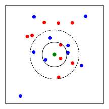

Klausurvorbereitung
Die folgenden Aufgaben sollen Ihnen dabei helfen, sich auf die Klausur vorzubereiten. Die Aufgaben sind so gewählt, dass sie den Prüfungsfragen ähneln und Themen aus den Übungen und Vorlesungen abdecken. Die eigentliche Klausur wird jedoch etwas länger sein und mehr Aufgaben enthalten.
Aufgabe 1: Kurze Aufgaben zum Aufwärmen
Kreuzen Sie die zu erwartende Ausgabe der folgenden Code-Blöcke an, wobei jeweils nur eine Antwortmöglichkeit richtig ist.
x = [1 , 2 , 3 , 4 , 5 , 6]
y = x[::-2]
print(y)
x = [1, 2, 3]
y = [4, 5, 6]
z = [a + b for a, b in zip (x, y)]
print(z)
import numpy as np
x = np.array([1, 2, 3])
y = np.array([4, 5, 6])
z = np.dot(x, y)
print(z)
Aufgabe 2: Gradientenverfahren
Ein Student soll das Gradientenverfahren implementieren und damit ein lokales Minimum eines Doppelmuldenpotentials finden. Ihm wurde die Iterationsgleichung des Gradientenverfahrens ausgehend vom Startpunkt mit der Schrittlänge , sowie die Definition des zu untersuchenden Doppelmuldenpotentials gegeben (vgl. Abb. \ref{fig:double_well}). Da er aber die Vorlesung nur selten besuchte, ist sein Code fehlerhaft.
Finden und korrigieren Sie alle 5 fehlerhaften Zeilen (Sowohl Syntaxfehler als auch inhaltliche Fehler) im folgenden Code-Block.
def double_well_gradient(x): # x: float
grad = 6 * x**5 - 2 * x - 0.25
return grad
def gradient_descent(func_grad, x0, tau=0.01, maxgrad=1e-6, maxiter=500)
x = 0
converged = False
for _ in range(0, maxiter):
grad = func_grad(x)
x = x - tau * grad
if grad < maxgrad:
converged = True
break
return x, converged
x_opt, converged = gradient_descent(double_well_gradient, -1.2)
print("Ein lokales Minimum liegt bei x = " , x_opt) # x_opt = -0.8872
Aufgabe 3: -Nearest Neighbors
Der -Nearest Neighbors (kNN) Algorithmus ist ein einfacher Algorithmus für Klassifikationsprobleme, der aber auch für Regressionsprobleme verwendet werden kann. Er ist ein parameterfreier Algorithmus, das bedeutet, dass er keine Trainingsphase hat.
Für einen gegebenen Punkt sagt der kNN-Algorithmus die Klasse voraus, indem die nächsten Nachbarn von im Trainingsdatensatz basierend auf ihrer euklidischen Distanz zu bestimmt werden. Die Klasse von ist dann diejenige Klasse, die unter den nächsten Nachbarn am häufigsten vorkommt. Dies ist im folgenden Bild für zwei Klassen veranschaulicht, wobei für (innerer schwarzer Kreis) die Klasse des grünen Punktes als rot vorhergesagt wird.

(a) Welche Werte für sind mehr oder weniger sinnvoll, wenn die Anzahl der Klassen zwei ist? Begründen Sie Ihre Antwort.
(b)
Vervollständigen Sie die Methode predict der Klasse kNNClassifier
in der folgenden Implementierung.
import numpy as np
import matplotlib.pyplot as plt
class kNNClassifier:
def __init__(self, k):
self.k = k
def predict(self, X, y, xi):
# TODO: Implement the kNN label prediction for xi
y_pred = ...
return y_pred
Das Model soll wie folgt verwendet werden:
N = 20
X = np.random.randn(N, 2)
y = np.hstack((np.zeros(N//2), np.ones(N//2)))
knn = kNN_Classifier(k=3)
xi = np.array([0, 0])
y_pred = knn.predict(X, y, xi)
print(y_pred) # Output: 0 or 1
(c)
Ist eine lineare Separationsgrenze zwischen den Klassen notwendig, um den kNN-Algorithmus einzusetzen? Begründen Sie Ihre Antwort mit einer Skizze eines Beispieldatensatzes aus zwei Klassen und einem zu klassifizierenden Punkt.
Der kNN-Algorithmus wählt nur die nächsten Nachbarn aus, und lässt diese eine Abstimmung über die Klasse des neuen Punktes treffen. Dabei hat jeder Nachbar eine Stimme. Man könnte jedoch auch argumentieren, dass die näheren Nachbarn mehr Gewicht haben sollten als die weiter entfernten Nachbarn. Das führt zum distanzgewichteten kNN-Algorithmus. Hierbei wird die Stimme des -ten Nachbarn z.B. mit dem Faktor
gewichtet, wobei die euklidische Distanz zwischen dem zu klassifizierenden Punkt und dem -ten Nachbarn ist, und genau so wie bei der Konstruktion des Modells festzulegen ist.
(d)
Vervollständigen Sie die Methode predict der Klasse kNNWeightedClassifier in der folgenden Implementierung.
class kNNWeightedClassifier:
def __init__(self, k, sigma=1.0):
self.k = k
self.sigma = sigma
def predict(self, X, y, xi):
# TODO: Implement the weighted kNN label prediction for xi
y_pred = ...
return y_pred
Der Aufruf der predict-Methode soll identisch sein wie bei der Klasse kNNClassifier.